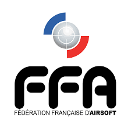

Accueil
Le Règlement
Comment commencer ?
Les types de répliques et leurs caractéristiques
L'équipement
Airsoft, La découverte
Bienvenue sur ce site dédier à la découverte de l'airsoft ainsi qu'à des aides pour les débutants.